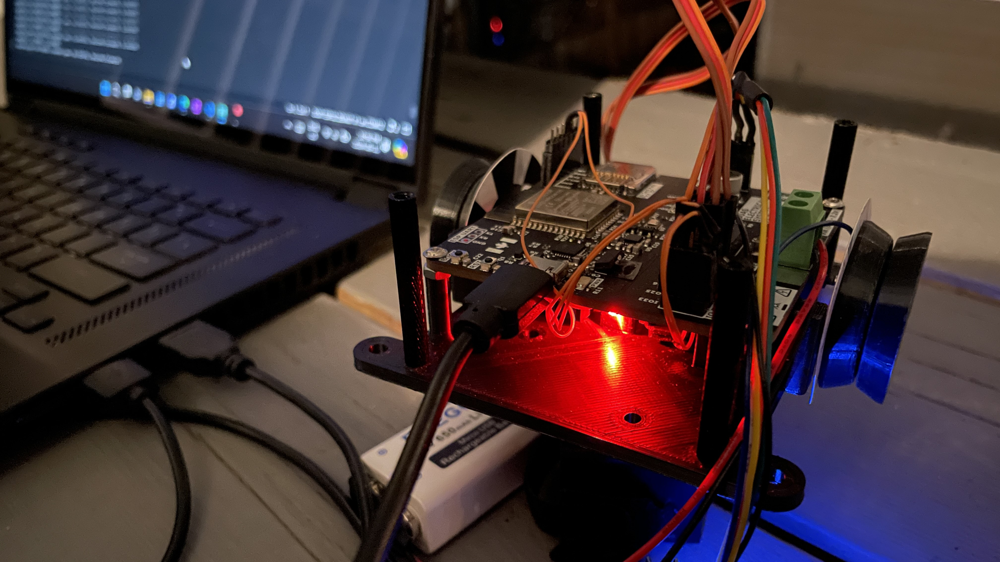

PCB Radio
These datasheets were legit lifesavers:
Si4704-05-D60
STM32F030
LM386

Above is the radio receiver IC circuit. Going to just find some wire lying around for the antenna. We want to match the impedance of the antenna to the impedance of the PCB trace to reduce reflection, and this can be done with capacitors/inductors as explained here: https://www.antenna-theory.com/tutorial/smith/smithchart5.php.
Some capacitors to decouple power. RST pulled down to ground, connects to STM32 which will switch it on after it is powered on (to avoid possible corruption).
Nothing much fancy here, just some buttons and LEDs and stuff. Datasheet says VDDA needs to be >= than VDD at all times so I hope the smaller capacitor does the trick lol. Also never tried using an oscillator before but apparently the built in oscillator is not that good. Too lazy to add USB so just going to flash with SWD.

Audio amplifier. I added a ton of potentiometers so I can adjust the gain. Volume can also be communicated to the receiver IC from the microcontroller (allegedly).

I expect the radio receiver stuff to be quite noisy. Tried my best to separate traces to the STM32 with a ground plane. I also kinda struggled placing vias so that they wouldn't cut off the ground plane in irregular ways and disrupt the return current.
Updates to come about reflow, firmware, and testing; stay tuned! :))
Autonomous Steering Parachute System
The 2024 Student Unmanned Aerial Systems Competition challenged us to build an autonomous aircraft that would recognize drop locations while in the air and deliver packages (water bottles) to these location. The autonomous actuated parachute system was part of our design.
Below is a photo I took while debugging one of the parachute controllers outside at 2 am (just typical engineering things üòä).

But my main (non administrative) contribution to this project was the parachute release system. Basically, I used an ESP32 integrate several core features. It had a UART link with the aircraft flight controller to retrieve GPS coordinates, wind speed, etc. and another UART to the Raspberry Pi performing image recognition in order to retrieve airdrop locations. It took me quite a bit of effort to figure out the communication with the flight controller, which used MAVlink protocol (see logbook for the struggles üôÇ). Then, this ESP also communicated wirelessly using ESP-NOW to the parachute microcontrollers to tell them which GPS coordinate they should steer to. Finally, it also sent commands to the servos that release the parachutes.
Phew!
Also got to breathe in some solder fumes (i.e. soldering a circuit board for the system) which is always fun.
See our technical design video for more details!

Robot Detective in ROS/Gazebo (ENPH 353 Machine Learning)
The competition goal for this project was drive a robot in simulation to read clue boards and avoid obstacles. I won't go through all the technical details of this project, but instead refer you to my logbook. Being in possession of a forgetful goldfish brain, I like to write extensive documentation, which serves as both a memory aid but also as a way for me to think through problems. The below image was actually taken from my logbook. (What in the world would I do without it?)

One fun thing I did do in this project was train a YOLO neural network to detect obstacles. I knew this was a bit overkill (most other teams used color thresholding or frame differencing) but I wanted to take on the challenge because YOLO is cool. A few hundred manually labelled images later, I got obstacle detection working surprisingly well!
Mario Cart Robot (ENPH 253 Instrument Design)
This competition was Mario Kart racing but in real life! In teams of four, we were tasked to follow a track around the competition surface while picking up mystery boxes, avoiding bombs, and navigating through shortcuts if so desired.
I was really excited to learn how to design PCBs for our robot, so I binged a ton of YouTube videos (thank you Robert Feranec üôè), made an H-bridge, and ordered it all before the course started haha.
It turns out that that was a good idea, since I was able to jump start development of the driving system. It took me more than a week to finally get a robot using front wheel (Ackermann) steering to follow tape all arounnd the track. I encountered quite a few difficulties along the way, including finding the optimal tuning for PID, dealing with slow response time, sensor noise, etc. Being the first team to have a front wheel steering drive working, I also pioneered the method of using torque vectoring to navigate tight turns, which many other teams also adopted.
Above is my second iteration of the H-bridge. My first one had a short since I did not realize that the manufacturer could not do blind vias. (Don't worry, it still worked! I just had to drill out the via haha.) At that time, I could actually draw the entire circuit from memory, and so finding the issue was quite easy with an oscilloscope. A more difficult issue I had to debug was actually caused by a defective batch of gate driver ICs that the lab had stocked.